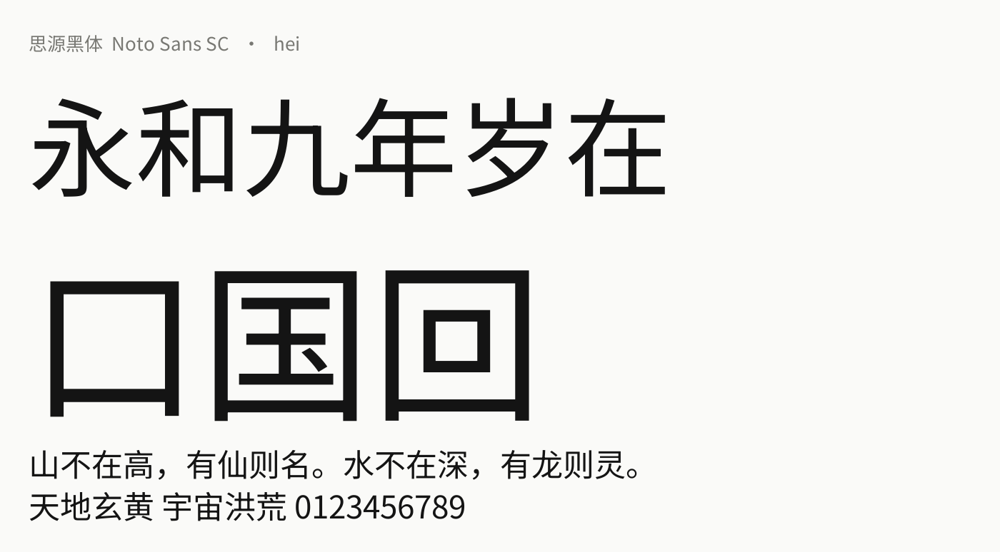
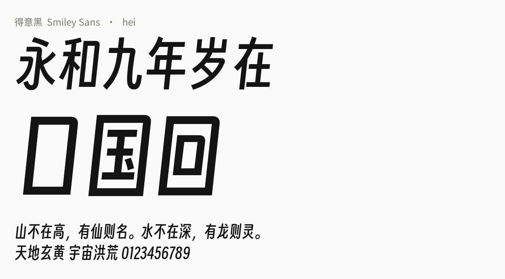
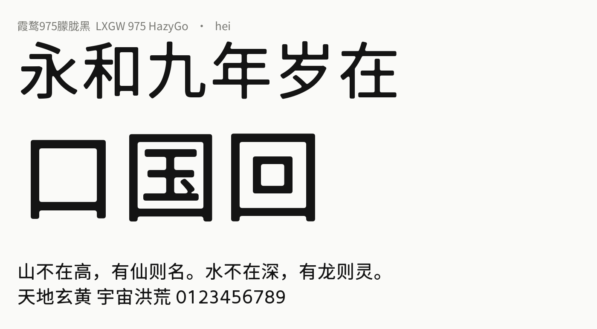
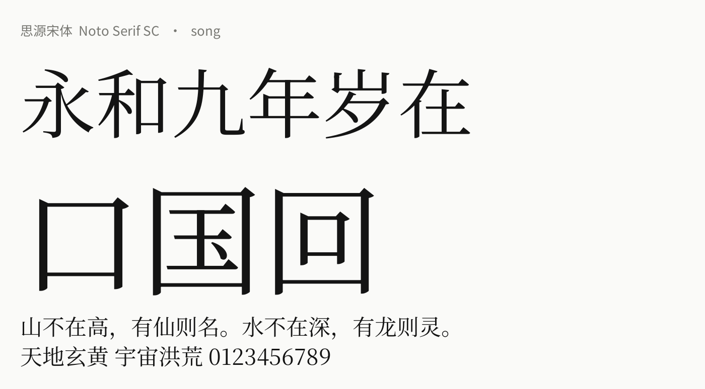
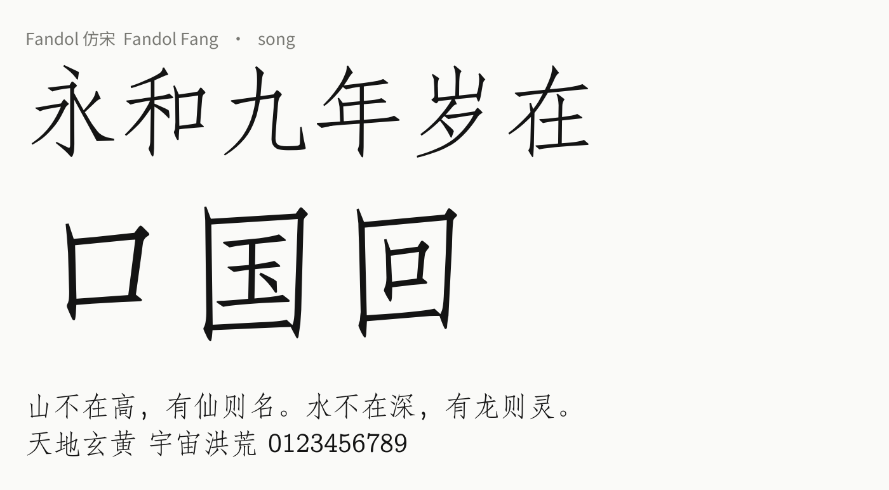

每一行：字体样张 · 各项分数（0–1，在本字体库中从最低到最高） · 相似字体（相似度越高越像，最像的在最上面；只列出相似度 ≥ 50% 的，至少 2 款；点击可跳转）。
要修改分数，请编辑 similarity/overrides.json，然后重新运行 build_similar.py。
| 字重×1.3 | 粗细对比×0.5 | 横竖对比×1 | 笔形×2 | 手写感×1 | 笔触×1 | 圆润度×1 | 字宽×0.7 | 字面×0.6 | 正式感×1 | 个性×1 | 标题感×1.5 | |
|---|---|---|---|---|---|---|---|---|---|---|---|---|
| 思源黑体 | 0.44 | 0.10 | 0.08 | 0.20 | 0.15 | 0.11 | 0.56 | 0.71 | 0.80 | 0.90 | 0.00 | 0.20 |
| 得意黑 | 0.61 | 0.12 | 0.00 | 0.14 | 0.28 | 0.27 | 0.53 | 0.06 | 0.48 | 0.45 | 0.45 | 0.90 |
| 霞鹜漫黑 | 0.38 | 0.75 | 0.83 | 0.23 | 0.14 | 0.14 | 0.52 | 0.70 | 0.61 | 0.40 | 0.35 | 0.55 |
| 未来荧黑 | 0.26 | 0.12 | 0.09 | 0.16 | 0.12 | 0.08 | 0.56 | 0.65 | 0.66 | 0.85 | 0.05 | 0.25 |
| 文泉驿微米黑 | 0.49 | 0.06 | 0.05 | 0.12 | 0.15 | 0.09 | 0.55 | 0.71 | 0.74 | 0.85 | 0.05 | 0.20 |
| 霞鹜975朦胧黑 | 0.53 | 0.09 | 0.07 | 0.22 | 0.22 | 0.14 | 0.97 | 0.70 | 0.68 | 0.70 | 0.10 | 0.25 |
| Fandol 黑体 | 0.55 | 0.22 | 0.11 | 0.45 | 0.18 | 0.30 | 0.49 | 0.70 | 0.83 | 0.85 | 0.05 | 0.25 |
| 霞鹜975黑 | 0.54 | 0.10 | 0.08 | 0.23 | 0.17 | 0.13 | 0.55 | 0.72 | 0.76 | 0.85 | 0.05 | 0.20 |
| 文泉驿正黑 | 0.34 | 0.25 | 0.25 | 0.35 | 0.13 | 0.14 | 0.54 | 0.71 | 0.92 | 0.80 | 0.05 | 0.20 |
| 思源宋体 | 0.12 | 0.83 | 0.85 | 0.87 | 0.23 | 0.38 | 0.60 | 0.75 | 0.84 | 0.95 | 0.05 | 0.10 |
| 霞鹜新致宋 | 0.11 | 0.83 | 0.85 | 0.85 | 0.22 | 0.37 | 0.59 | 0.73 | 0.70 | 0.90 | 0.10 | 0.10 |
| 文鼎PL简报宋 | 0.01 | 0.43 | 0.46 | 0.90 | 0.20 | 0.30 | 0.71 | 0.67 | 0.82 | 0.90 | 0.10 | 0.10 |
| 文鼎PL明体 | 0.02 | 0.43 | 0.46 | 0.88 | 0.19 | 0.29 | 0.72 | 0.66 | 0.81 | 0.90 | 0.10 | 0.10 |
| Fandol 宋体 | 0.06 | 1.00 | 1.00 | 1.00 | 0.33 | 0.51 | 0.56 | 0.70 | 0.86 | 0.90 | 0.10 | 0.10 |
| Fandol 仿宋 | 0.00 | 0.30 | 0.15 | 0.82 | 0.68 | 0.53 | 0.58 | 0.43 | 0.67 | 0.85 | 0.15 | 0.15 |
| 朱雀仿宋 | 0.13 | 0.39 | 0.26 | 0.79 | 0.61 | 0.52 | 0.61 | 0.69 | 0.68 | 0.85 | 0.15 | 0.20 |
| 霞鹜文楷 | 0.26 | 0.19 | 0.15 | 0.47 | 0.46 | 0.29 | 0.81 | 0.76 | 0.71 | 0.75* | 0.20 | 0.20 |
| 霞鹜臻楷 | 0.54 | 0.15 | 0.12 | 0.34 | 0.47 | 0.25 | 0.91 | 0.75 | 0.73 | 0.65 | 0.20 | 0.35 |
| 文鼎PL中楷 | 0.14 | 0.48 | 0.30 | 0.79 | 0.80 | 0.65 | 0.82 | 0.72 | 0.43 | 0.80 | 0.10 | 0.20 |
| Fandol 楷体 | 0.07 | 0.59 | 0.31 | 0.94 | 0.77 | 0.75 | 0.69 | 0.78 | 0.56 | 0.80 | 0.10 | 0.20 |
| 文鼎PL简中楷 | 0.12 | 0.46 | 0.27 | 0.79 | 0.80 | 0.65 | 0.81 | 0.70 | 0.38 | 0.80 | 0.10 | 0.20 |
| 马善政毛笔楷书 | 0.43 | 0.59 | 0.23 | 0.80 | 0.83 | 0.76 | 0.79 | 0.63 | 0.52 | 0.45 | 0.35 | 0.75 |
| 志莽行书 | 0.39 | 0.63 | 0.12 | 0.86 | 0.97 | 0.92 | 0.71 | 0.61 | 0.00 | 0.30 | 0.50 | 0.85 |
| 流江毛草 | 0.17 | 0.77 | 0.29 | 0.97 | 1.00 | 1.00 | 0.69 | 0.10 | 0.24 | 0.15 | 0.60 | 0.85 |
| 龙藏体 | 0.14 | 0.57 | 0.12 | 0.83 | 0.89 | 0.81 | 0.70 | 1.00 | 0.26 | 0.30 | 0.40 | 0.60 |
| 小赖字体 | 0.50 | 0.03 | 0.01 | 0.08 | 0.28 | 0.03 | 1.00 | 0.68 | 0.53 | 0.35* | 0.40 | 0.45 |
| 悠哉字体 | 0.20 | 0.05 | 0.02 | 0.00 | 0.72 | 0.00 | 0.99 | 0.68 | 0.60 | 0.40 | 0.30 | 0.35 |
| 黑糖话梅 | 1.00 | 0.17 | 0.18 | 0.25 | 0.28 | 0.14 | 1.00 | 0.75 | 0.72 | 0.45 | 0.25 | 0.60 |
| 霞鹜975圆体 | 0.55 | 0.07 | 0.08 | 0.11 | 0.21 | 0.03 | 1.00 | 0.71 | 0.70 | 0.60 | 0.10 | 0.30 |
| 资源圆体 | 0.43 | 0.08 | 0.07 | 0.11 | 0.16 | 0.04 | 1.00 | 0.69 | 0.72 | 0.65 | 0.05 | 0.25 |
| 站酷快乐体 | 0.69 | 0.06 | 0.01 | 0.12 | 0.52 | 0.41 | 0.51 | 0.70 | 0.46 | 0.20 | 0.45* | 0.90 |
| 站酷庆科黄油体 | 0.69 | 0.03 | 0.01 | 0.20 | 0.23 | 0.13 | 0.99 | 0.00 | 0.26 | 0.30* | 0.70* | 0.95 |
| 站酷小薇体 | 0.24 | 0.83 | 0.87 | 0.59 | 0.09 | 0.17 | 0.53 | 0.64 | 0.36 | 0.50 | 0.45 | 0.80 |
| 缝合像素字体 | 0.60 | 0.00 | 0.01 | 0.69 | 0.03 | 0.05 | 0.26 | 0.73 | 0.87 | 0.30 | 0.75 | 0.70 |
| GNU Unifont | 0.30 | 0.01 | 0.01 | 0.81 | 0.00 | 0.00 | 0.00 | 0.55 | 1.00 | 0.35 | 0.70 | 0.65 |




